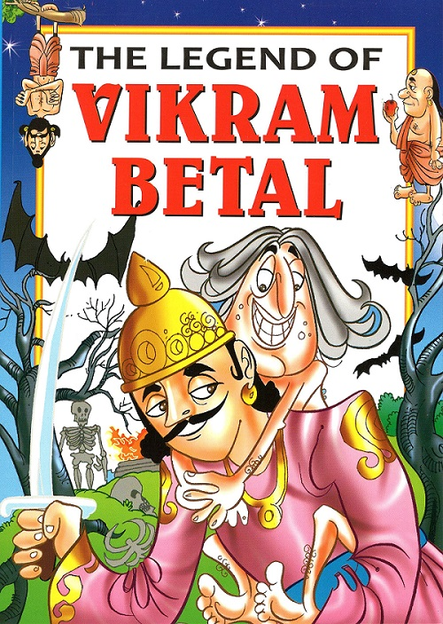

|
Who is at Fault?
Blame doesn't prove the fault
Vikram continued his journey, Vaitaal said - "Vikram, Now listen to a story. A
Braahman lived in Maheshpur kingdom. His name was Kamal Kishor. His wife
Sulochanaa was very beautiful. Once Kamal Kishor had to go out of the
kingdom. Two months had passed. Sulochanaa remembered her husband very
much. Once she was drying her hair after taking bath on her roof, that a
young man, Shyaam Sundar, saw her. He was just wandering on his horse. He
got stunned to see her. Sulochanaa also saw him. She wanted to see that man
again. Her maid said - "If you want, I can bring him here. I know him."
Sulochanaa agreed and the maid brought him there. Both met regularly till
Kamal Kishor came. After Kamal Kishor had come, Sulochanaa could not meet
Shyaam Sundar. Now she liked to meet Shyaam Sundar and she withdrew from
Kamal Kishor. Kamal Kishor felt a withdrawl, so he tried to find out its
reason. He made an inquiry from the maid and she told him everything.
Kishor's heart was broken. One day he left Sulochanaa and went away.
Sulochanaa again started enjoying the company of Shyaam Sundar. She
continued to meet him for a few months, but then she noticed that Kishor had
not come back.
Sulochanaa got pregnant. Kamal Kishor was nowhere to be found, so she went
to live with Shyaam Sundar. When the time came she gave birth to a beautiful
boy, but Shyaam Sundar refused to accept him as his own son. Sulochanaa got
sad, she killed the boy and threw him.
Kamal Kishore became a Saadhu. He lived on the banks of a river. By chance
where Sulochanaa threw her child, Kamal Kishor lived there. In the morning,
king's soldiers found the dead body of the baby near Kamal Kishor's hut, so
they took him to the king thinking that Kamal Kishor had killed him. King asked
- "You have done this?" "No, Sir." "But the boy's face resembles your face."
King was speaking the truth, because soldiers had also noticed this and they
told this to the king. Kamal Kishor did not speak anything. King asked him -
"You lie being a Saadhu?" Kamal Kishor still did not speak anything. The king
ordered to hang him on a crossroad next day. Next day king's soldiers came
to take him. They asked him - "Do you have your last wish?" Kamal Kishor
said - "Yes, There is a woman named Sulochanaa who is the wife of Syaam
Sundar. Bring her in front of me when I am to be hanged." Soldiers brought
her there. She recognized her husband and requested the king not to hang
him. She accepted her crime.
Now, tell Vikram, who should be hanged? What is your judgment?"
Vikram didn't say anything. Vaitaal said - "Speak Vikram, speak." Vikram
asked - "What did king do?" Vaitaal said - "Leave the king, you tell me your
own judgment. If you had such a case in your court, what would you do?"
Vikram said - "Vaitaal, My judgment is this that all three should be hanged."
"Why?" "Because the child was born because of all the three. Although
Sulochanaa killed him, still all three are partners in this one. Nobody becomes
criminal just because blamed by other. Its cause is the main reason, and its
cause were all the three, that is why the three were equally responsible for
his death."
Vaitaal said - "But the king hanged Sulochanaa only." "Well, Its one's own
decision." Vaitaal said - "You are right, Vikram." Then he laughed loudly.
Vikram knew that Vaitaal ran away only after knowing his judgment. So he
became careful. He had held him tightly. Still Vaitaal jumped away from his
shoulder, ran away and hung from the same tree. Vikram lifted him on his
shoulder and continued his journey. Vaitaal said - "Don't worry, Vikram, when
the time will come I will help you. Till then you listen to another story to kill.
|

|